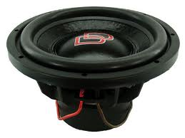

The Type-R Subs have been completely redesigned to offer more installation flexibility and application versatility to build the ideal sound system.
At 5 7/8 for the 10” and 638 for the 12”, these new designs offer a near 20% reduction in mounting depth, while offering even greater output capability.
Thus meaning more bass allowing you to be heard far away while maintaining the great sound quality.
Digital Designs World Champion in SPL and SQ

It is the goal of DD Audio to create the finest audio products possible, dedicated to the ultimate performance of the product no matter the lengths required of the design or manufacturing process.
Since 1986, they have been building products for the Pro Audio Industry, Marine Industry, Mobile Audio, Home Audio, Industrial Applications and OEM Applications that are still in use around the world.
They take pride in their role as an American design and manufacturing company, offering high quality products for everyone. That is why today they are still the best manufacturer of spl and sq car audio
speakers.